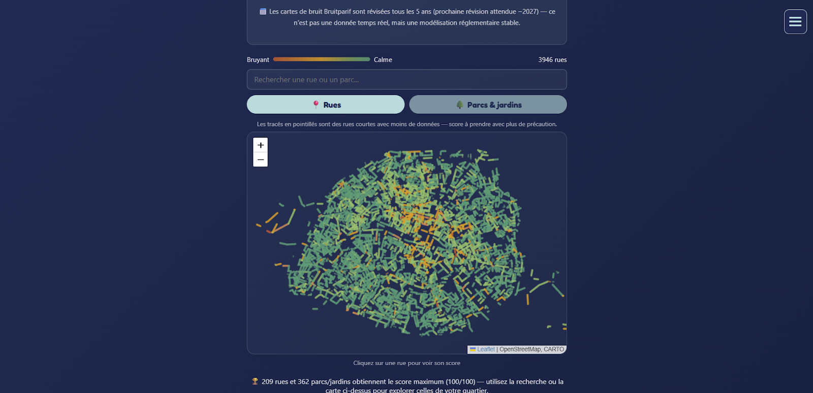

Est-ce que Paris est vraiment aussi bruyante qu'on le pense ? Et surtout : peut-on savoir, rue par rue, où se trouvent les vraies poches de calme ?
C'est la question qui m'a lancé dans ce projet : croiser plusieurs jeux de données officielles et ouvertes pour calculer un score de calme sur environ 4 000 rues et 700 parcs et jardins parisiens. Le résultat est visible ici :
👉 Découvrir la carte du calme de Paris
Pourquoi faire ça ?
Le bruit est l'une des premières sources de gêne en ville, mais on en parle presque toujours de façon générale ("Paris est bruyante"). J'avais envie de quelque chose de plus précis : quelle rue exactement, quel parc exactement, avec des chiffres vérifiables plutôt qu'une impression.
Comment le score est calculé
Pas de sondage, pas d'avis subjectif — uniquement des données publiques officielles, croisées :
- Le bruit du trafic routier et ferroviaire, mesuré et modélisé par Bruitparif (l'observatoire du bruit en Île-de-France), jour et nuit
- La proximité aux grands axes bruyants, calculée de façon continue (pas juste "dans la zone" ou "hors zone")
- La présence de bars et vie nocturne à proximité (OpenStreetMap), pondérée selon qu'ils ont une terrasse ou des horaires tardifs
- Le taux de végétation (canopée), mesuré par photo aérienne par la Ville de Paris — la verdure réduit le stress lié au bruit, même à niveau sonore équivalent
- La présence de marchés découverts à proximité, pondérée par le nombre de jours d'ouverture par semaine
Chaque rue est échantillonnée tous les 30 mètres environ, et les rues trop courtes pour avoir un échantillon fiable sont clairement signalées comme telles (pas de fausse précision).
Ce que ça révèle
Sans surprise, les grandes places et axes historiquement animés arrivent en bas du classement : Bastille, Nation, Place Victor Hugo, Boulevard Beaumarchais — toutes à égalité au score le plus bas.
Plus surprenant : la Place des Vosges obtient 100/100, le score maximal. Logique quand on y réfléchit — c'est une place entièrement piétonne, sans circulation à l'intérieur, contrairement à la plupart des grandes places parisiennes.
Certains grands jardins parisiens (Tuileries, Palais-Royal, Luxembourg) sont aussi intégrés, avec leur vrai taux de végétation mesuré par photo aérienne — pas juste une estimation approximative.
Cherchez votre rue
La carte inclut un outil de recherche — tapez le nom de votre rue ou d'un parc pour voir directement son score, sans avoir à naviguer sur la carte entière.
Et la carte citoyenne, alors ?
Cette carte du calme est calculée à partir de données officielles — elle est complémentaire à la carte collaborative AuKLM, où ce sont les habitants eux-mêmes qui signalent leur ressenti réel, en direct. Les deux approches se complètent : l'une donne une base de référence, l'autre capture le vécu que les chiffres ne voient pas (un chantier ponctuel, une manifestation, une ambiance de quartier).
Si vous voulez contribuer avec votre propre ressenti — bruyant ou calme — c'est par ici, ça prend 10 secondes et c'est anonyme.
AuKLM est un projet citoyen indépendant, gratuit et sans publicité. Toutes les sources de données utilisées sont citées et sous licence ouverte (Bruitparif, OpenStreetMap, Ville de Paris/Paris Data).